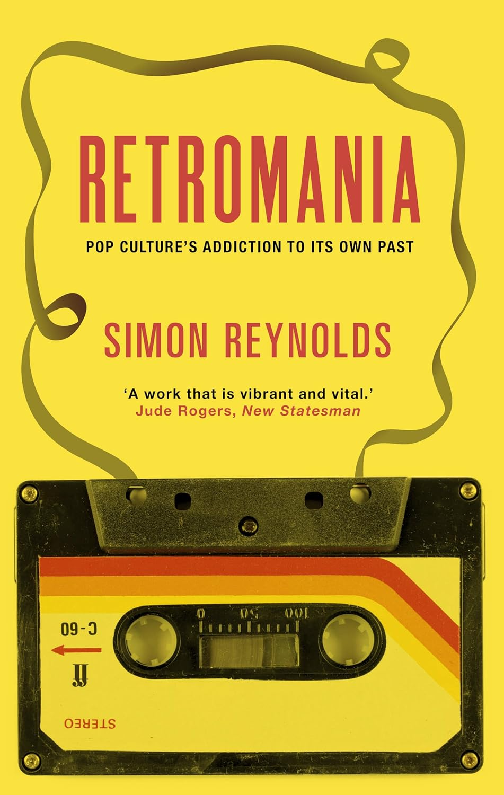

By Pressing Down This Special Key
It Plays A Little Melody
Videogame Subcultures and Nostalgia for the Future
Panelists: Noriko Manabe [NM], Martin Roberts [MR]
Host: Yoshitaka Mouri [YM]
Transcribed, edited, and adapted for the web, August 2024.
Martin Roberts
Emerson College
| | | |
MR: Let me say first of all why I’m interested in chipmusic. It’s also sometimes called 8-bit music. In Japanese context, you hear the term pico pico as well. That’s probably the term you’re most familiar with. I’m interested in subcultural musics, or more specifically, the role of music as a basis for subcultural identities–we need only mention punk as a simple example of what I’m talking about there. Chipmusic has been for the past 30 years, and to a large extent today, I think still remains, a subcultural music, which also models itself in some ways on earlier subcultural identities like punk - interestingly, there was an article published in Wired magazine in 2003 by none other than Malcolm McLaren himself, the subcultural entrepreneur responsible for the Sex Pistols, essentially embracing chipmusic as the new punk. This was in 2003. He got a lot of criticism from people within chipmusic for that. But it’s interesting that Malcolm McLaren himself sees chipmusic as in some ways picking up where punk left off.
YM: translates
MR: So this paper is part of a larger project I’ve been working on for a few years now, which is about the relationship between subcultures and globalization, and will be included in that project. In particular, with regard to music, I’ve been interested in what I call transnational subcultural networks. Chipmusic would be one example of that. I recently completed an article which is coming out soon on Shibuya-kei, the Shibuya-kei genre as a case study in a transnational soundscape, actually, as I characterize it in that article. So I see chiptunes within the same kind of perspective, and I’m going to talk tonight about it as a transnational soundscape.
Martin Roberts, “‘A New Stereophonic Sound Spectacular’: Shibuya-kei as Transnational Soundscape.” Popular Music 32, no. 1 (January 2013): 111-123.
I know the audience is Japanese, so I’m going to try to focus more on Japanese things, but this is not a specifically Japanese project, although it has a lot of interesting connections to Japanese popular music, as you’ll see.
YM: translates
MR: Chipmusic or chiptunes has a surprisingly long history, and it’s been known under different titles. I’ve started to experimentally use the term nanomusic precisely because chip music is a term that’s often used to describe music which is, strictly speaking, not chipmusic anymore. A definition that’s given, what’s called the strict definition of chipxmusic, is that it is music composed for the microchip-based audio hardware of early computers and gaming consoles; so the music is composed for and performed with microchips, particularly like the Commodore SID chip, which is the classic kind of chip from the 80s. A lot of music today, strictly speaking, particularly sample-based music, does not do that directly or does it in all sorts of complicated ways. So I’ve started to use the term nanomusic. I think in many ways we live in a kind of nano-culture today, and this is something that is happening with music. Music is getting smaller and smaller. The devices that we play, music is kind of getting smaller and smaller. On my iPhone, I have two apps, both starting with nano. One is called NanoStudio, which is basically a sort of sequencer program, and then a program called NanoLoop, which was written originally for the Game Boy in 1998, and is used to compose chiptune music. So the word nano comes up quite repetitively in talking about these musics, and given that there’s no agreement really on the particular term that we can use to talk about these kind of micromusics - if you like, music on mobile or micro-devices - I’m wondering whether nano-music might be a useful term to use. We can maybe discuss this later.
YM: translates
YM: So the history of chip music is a long one, it goes back a lot longer than you might expect. It’s part of the larger history of videogame music. So I’m going to go back a little bit historically to the 1980s and just suggest a couple of starting points for thinking about or putting what we now call chipmusic or what I’m experimentally calling nanomusic into more of a historical context. So the first is kind of a test. We’ll see how geeky you are in terms of whether you can identify this particular track that I’m going to play.
YM: This is amazing.
MR: Yeah?
YM: This is amazing music.
MR: Yeah, you should know it. You should know this.
YM: It’s so funny.
MR: Quiet, please. You should be listening to the music! Anyway, you get the idea.
So, that piece you just heard is Hosono Haruomi from 1984, obviously from the YMO [Yellow Magic Orchestra - Ed.] period. Video Game Music, one of the first recordings to actually take videogame music seriously. We could go back further, YMO has Computer Music from 1979 as well. So, around about that period, YMO, particularly Harry Hosono, were very interested in videogames. So, this period, like the early 1980s, is a good place to, or arguably an essential place to start when we’re thinking about the origins of chipmusic.
Here’s another place we could start. This is a short excerpt from Chris Marker’s famous global documentary film from 1983 called Sans Soleil [Sunless]. It’s in French with English subtitles, but you’ll get the idea if we just take a look at it. 1983, one year before Harry Hosono’s album.
Okay, that’s the clip. How many times have I heard that sound at the end of the death of Pac-Man? So, a graphic metaphor of the human condition according to Chris Marker. Interesting to think about. The reason I show this as well as play the clip from Hosono Harumi is that we can already see in this clip Chris Marker’s recognition of video game music as a soundscape of urban everyday life. And we also see, interestingly, in the rather psychedelic sequence with the video synthesizer, Yamaneko Hayao, the very complex interplay between music and image within videogame culture. And a lot of contemporary artists, as you will see, who perform chipmusic, have quite spectacular and interesting visuals as well. Rather reminiscent in some ways of what we just saw. There are many different varieties, but this clip, actually, I think, shows quite well the complex interplay between video and music really from the outset of the history of videogames.
YM: translates
MR: So, let’s fast forward from 1983 to 2006.
So that was the first Blip Festival that was held in New York in 2006. And that’s continued every year since then. In fact, interestingly, this weekend is Blip Festival in New York. So, it’s actually starting today. Well, they’re a little bit behind us, so it hasn’t started quite yet. But it’s starting today in New York, and it’s going over this weekend. What was interesting about the first Blip Festival, which developed out of a scene that had been sort of simmering in New York really since the early 2000s at a club called The Tank, is that, as you can see, there are a lot of Japanese artists there. We saw a couple in that little clip. There was also a performance by probably the leading Japanese chipmusic performer, which is a group that some of you might have heard of called YMCK. Andx we’ll be hearing a little bit more about YMCK later. In 2009, however, the festival was held in Denmark. And from 2010, the first one was held in Tokyo, the first one was held in 2011. It’s being held again in the fall 2012 in October at Koenji High. I’m hoping to go. I’ll be in Korea at the time, but I’m going to come over and go. So, if you’d like to join me, that would be great.
So, that’s 2012. So, what has happened, because of the Tokyo Blip Festival starting up, there’s less Japanese artists go over now than at the very beginning, because they have their own festival in Tokyo. This year, there’s only one Japanese artist, I think, or one or two. I believe it’s just one artist performing, which is Terada Soichi, also known as Omodaka. And we’ll hear more about Omodaka later.
YM: translates
MR: This scene is actually more of a revival than a new development. There’s been a resurgence of interest in chip music, which was much more subculture in the 80s and the 90s and was done really by computer programmers, people that could actually program the chips to play the music. It’s gradually become more easy as software was written so that non-programmers could play that music. It’s become increasingly easy over the past decade to the point now where you can play chip music on an iPhone or an iPad using apps. The reasons for the revival are kind of complicated, but rather obvious, I suppose, in some ways. You can talk about it in terms of networks, new networks, emerging websites. Micromusic, 8-Bit People, 8-bit Collective, these are all major kind of portals for chipmusic. And then, of course, particularly over the last five or six years, the rise of YouTube, Facebook, Twitter, SoundCloud as a way for musicians to upload and share music. So really, particularly SoundCloud, I think, and the other netlabels, as they’re called, have been really instrumental in the scene taking off over the past six years or so.
YM: translates
MR: So you’re probably wondering about what kind of genres of music are played on chip music - we saw some hardcore earlier, we saw some more kind of mellow electronic music. But a very wide variety of musical genres are represented in chipmusic. And, in fact, the differences play out more in terms of the different platforms that people use. The Nintendo Game Boy is one of the dominant platforms, but certainly not the only one. And increasingly, people are re-engineering their own equipment.
So I’ve become very interested in one of the netlabels that I didn’t mention up until now, which is called Jahtari, which basically used to produce something that they called digital laptop reggae, although they realize that term is now obsolete because they don’t use laptops anymore. They use synthesizers that they built themselves that use the Commodore SID sound chip. But basically they’re producing what we could call chipped dub music and reggae and other styles as well. So I’m going to investigate this a little bit and show you more about that.
YM: translates
MR: Digital laptop reggae, they call it, DLR.
YM: Is it equipment or is it software?
MR: Equipment. They were using not Ataris but Commodore SID primarily to produce… Well, the software, I’m not sure what software they were using on the laptop…
YM: translates
MR: So let me tell you a bit more about Jahtari. It was started by a guy whose DJ name is disrupt.
YM: Jahtari?
MR: Yeah, Jan Gleichmar. He’s from Leipzig in Germany. Leipzig is one of the big centers for chipmusic production. disrupt and one of his collaborators went on an Asian tour in 2009 to China, to Hong Kong, and to Tokyo–they had a couple of weeks in Tokyo. And this song, which I’m now going to play to you, is very popular in Japan. So I’m going to play it to you and I think you might recognize it.
I’m assuming everybody recognized that, but maybe I’m wrong. But we’ll come to what it actually is in a minute. Jan Gleichmar couldn’t understand why people were singing along to this tune when he played it to audiences in Japan. Because he thought that he was covering these two songs: a slightly older song from the 60s by the Soul Vendors called “Ringo Rock,” and a song by the Skatolites just called “Ringo,” from 1965.
That’s the Skatolites version. This is the Soul Vendors version.
So does anybody recognize this song? (It’s not about Ringo Starr).
NM: It’s “Ringo Oiwake”.
MR: Exactly.
NM: But the question is, did they get it from Martin Denny or did they get it, where did they get it from?
MR: This is unknown at the moment, but you’re correct. Here it comes.
Of course, you all know who this is, Hibari Misora, one of the most famous popular singers in Japan. The film is 1952. To my knowledge, this is the origin of the track that we started from in 2009. It was played by Jan Gleichmar. Actually, I just picked up a vinyl copy of this song yesterday. I’ll pass this around. It’s kind of nice. It’s a cultural artifact of “Ringo Oiwake.” Nobody seems to know how it got here. I’m sure most of you know this, but it was played in 2009.
YM: translates
MR: So yeah this is an interesting example of what Keir Keightley, the Canadian popular music scholar, calls a song network. He has a very nice article about this Brazilian song, a bossanova classic called “O Barquinho” from the 1960s, and the relationship between “O Barquinho” and the French song bossanova in France, but also a particular song from the soundtrack to [Claude LeLouche’s film] A Man and a Woman, which is structurally very similar to the structure of the Brazilian song “O Barquinho”. So the concept of song network, I think, is an interesting one to explore in popular music - Keir Keightley works on what he calls round-the-world music, cosmopolitan music, like Martin Denny, for example, and all that stuff, like exotica from the 50s and 60s. Song network.
YM: translates
I mentioned YMCK earlier as being the best known of the Japanese chipmusic musicians, so I’m going to give you a couple of other examples to finish up today. YMCK is one of them. They have lots of unbearably cute music videos, which you can find on YouTube, so I just leave you to type YMCK into YouTube and you can see them all. The smaller the screen, the cuter they are, basically. I can show them later on my iPhone if anybody’s interested. But this is one of their more recent projects, which I think is very interesting for all sorts of reasons. Here it is.
MR: That’s YMCK player. What’s interesting about that is these guys are musicians, but in fact you don’t have to be a musician to play this device. Particularly the current generation of apps have made it possible for not only non-programmers but non-musicians to play music by manipulating sort of ready-made musical objects effectively. I could get into more technical stuff about this, but it would be too detailed at this point. But suffice to say that, for example, I’m thinking of, it’s very common now on a lot of musical apps to be able to play quite complex scales that take a long time to learn on a keyboard, melodic minor scales or something like that, or even just any scale, automatically. So you hear these guys jamming, you can be playing blues scales, you can play any scale you like basically, and you just set the key in the scale and away you go, and you’re just basically playing the rhythm. So just as the first step in chipmusic was to enable non-programmers to play the music, these devices now enable non-musicians to play music.
YM: translates
I have one more example, I know time is running short, so I’m going to show you just one more example now, which is again very different from what I’ve looked at so far. I mentioned Omodaka earlier, he’s one of the leading performers of chipmusic, but do you already get a sense, I think, of the importance of performance in the current generation of chipmusic - this is something obviously that didn’t happen in the 80s or even the 90s. But since Blip Festival particularly, performance has really become a more important ixssue. And how do you make it interesting? I mean, it’s just basically you and a small sort of interface device, as you saw, doing that, right? Maybe not very interesting as playing, you know, killer riffs on a guitar, even if you’re sort of trying to rock out. So chipmusicians are becoming increasingly inventive in their performances, and one of the most inventive is Omodaka. His name is Terada Soichi.
YM: translates
[VIDEO: clip]
That’s right. In any case, the importance of performance is very different from what it was in the 80s or 90s, and now the chipmusicians are doing a lot of innovative things with their performances. Compared to the guitar, it may not be that interesting, but that’s how it is. So, Terada Soichi.
Omodaka [Terada Soichi], “Yosawya San”, live at Bowery Ballroom, New York, 22 March 2009.
[Playback glitches] That’s the chip on my computer that’s failing… Anyway, you get the idea.
So there’s a lot going on in that video that is of interest to me, not least what seems to be a kind of reverse karaoke with Kanazawa Akiko, the famous singer who collaborated with Terada Soichi on this project, singing, you know, kind of not exactly lip-syncing but because she is singing, but not present, obviously, but still performing. And then I’m sure you noticed his rather unusual costuming, which is a cross-dressed miko, basically Shinto shrine maiden, I think it’s usually translated. I’ve been investigating the history of miko and it’s kind of interesting, involves trance dancing at various historical periods, but I’m still kind of digging into that at the moment. But, and then as for the mask, I’m not sure about what to make of that. Maybe you have some thoughts about that. But anyway, you saw enough to get some idea of what I mean when I talk about performance in chipmusic today. So I’ll finish it here.
I could have talked about retromania, which is Simon Reynolds’s book, recently critiquing phenomena like the fetishizing of rock music’s historical past. Interestingly, Simon doesn’t talk about videogame music at all in the entire book, and it’s a very lengthy book. It has nothing to say about chipmusic, but I’m sure you would see it as an example of retromania. But what I would emphasize is that for most of the musicians that we’ve been looking at today, they don’t really see what they’re doing as nostalgia anymore at all. Of course, there’s an appeal for that generation for the kind of toys that they grew up with, playing on Game Boys and Commodores and so on. But it’s really about doing something new with old technology. And it’s interesting that Manabe-san was talking about Gérard Genette and structuralism because the concept of bricolage is another structuralist concept that I think works quite nicely to talk about what people are doing today to make something new out of old technologies. So I’ll stop there.

Simon Reynolds, Retromania: Pop Culture’s Addiction to Its Own Past (London: Faber & Faber, 2012).
YM: Thank you.
YM: translates
This, this, yeah, just briefly, this is a guy I met last weekend in a videogame store in Kichijoji. He introduced himself as a Mario pianist. He performs classical music performances of Mario games, basically. So I’ll just leave you with this.
He’s from Nagoya. Nagoya? Is it accident or you made an appointment? It was accident. Happy accident. Surrealist encounter.
MR: It’s almost like the exact opposite of chiptunes. … Mario plays classical music. … It goes on for quite a long time. Here he is again, sorry.
YM: Do you have time to go out after this?
MR: Yeah.
Q&A
YM: What he said, maybe it’s a kind of live music or a live event plays a very important role to globalize.
MR: Absolutely.
YM: Is there any kind of historical trajectory?
MR: Well, the scene, the scene globalized. First of all, you have to understand that there’s more than one scene. So the Jahtari scene is different. The musicians that are on the Jahtari netlabel that are playing reggae on dub on Commodore chips are a different bunch of guys from the people that go to BlipFest every year. BlipFest itself has started to globalize and they have, I think the first year there were about five or six Japanese musicians. Then there was Scandinavian musicians. Now people come from Australia, really all over the place, but less Japanese because they have their own festival now. So some Americans are coming over actually in the fall to the Tokyo BlipFest. But as far as I know, that’s the main chipmusic festival. I don’t know of any others that, for example, specifically for BlipFest that seems to be the main event at the moment. There is quite a lot of variety in the genres of music, but for example, I haven’t really seen, there’s a documentary about BlipFest and I didn’t really see any like reggae or dub performed in that. It’s just mainly other genres, you know, rock or hip-hop or yeah, all sorts of things. But BlipFest is the main festival.
YM: What is the difference between techno music and chipmusic? Is there any kind of point?
MR: Quite a lot of musicians have started out doing techno, have gone into the chip scene now.It’s not invariably true. One interesting question as well for chipmusicians is whether they arethemselves already trained musicians. Some are classically trained or have some kind of training. Others didn’t. They’re true sort of bricoleurs, you know, in Levi-Strauss’ sense of bricolage. They just experiment and it’s very intuitive, their approach to it. But a number of people did come out of techno and I think they became dissatisfied with the increasing complexity. It’s a little bit like using Microsoft Word to write an essay. You know, the program has become so complicated that now we have all these very simple apps for writing which just give you a blank screen basically and it’s a kind of minimalist approach. So people like the constraints of the chiptunes hardware and software and working within those constraints rather than trying to figure out Ableton Live or Pro Tools or whatever. Malcolm McLaren in the article about about chipmusic from Wired magazine mentions that one of the French guys that he was hanging out with, a chiptunes artist, was wearing a t-shirt that said Fuck Pro Tools. You know, so there’s a kind of reaction against the over-complexity of techno music and an idea of going back to something very, very limited and constrained and trying to be creative within that.
YM: translates
If anybody wants to try YMCK player, I have an idea. I was going to perform, but I’m not very good at it, so…
Oh, no, you have to show it.
You should come up and play it. Wait, wait, wait, wait. Come here. Plugging in. Let me turn it up. It should be working. It’s not working. Wait, you can get a better wave. You can get a better, louder wave on it. It’s working. Something like that, it’s very cheap. You know what I was going to say? But it only has that one bass? No, no, you can add any tune from your iTunes library. So I was putting in like Pizzicato 5 songs, and you can kind of play along with it. Yeah, so that’s nice that you can play along with any song, basically. Even if you’re not a musician. Especially if you’re not a musician.